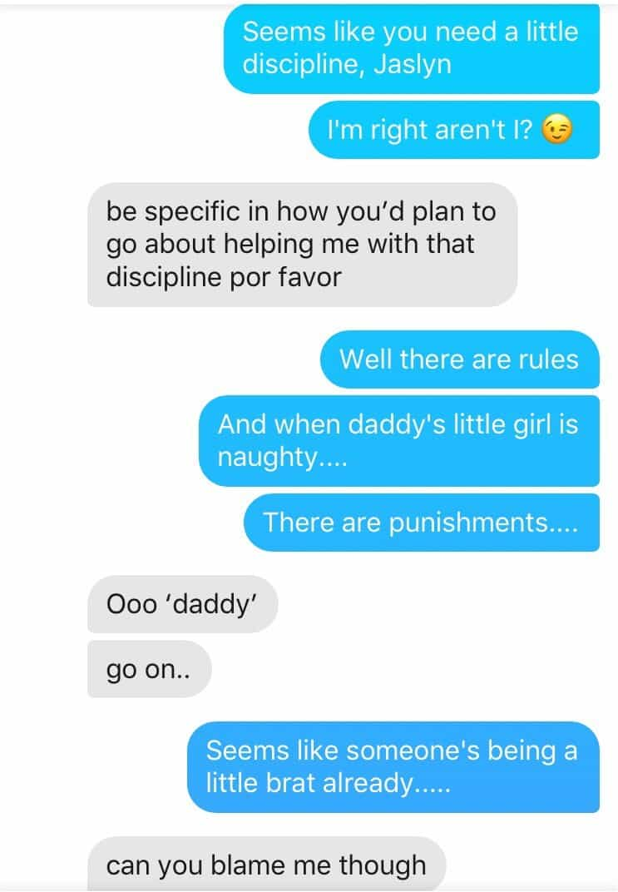
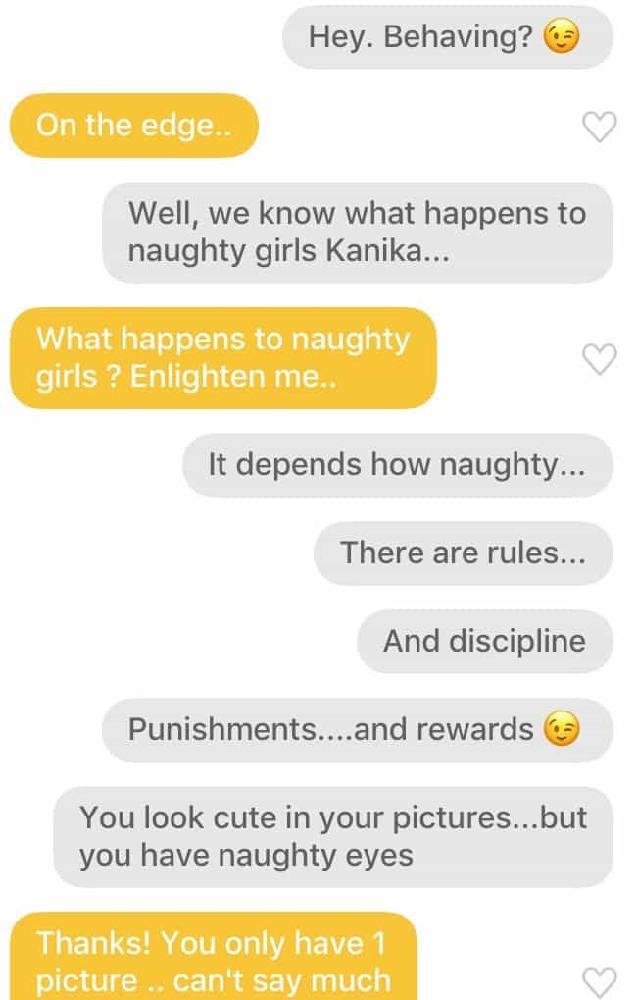

Troy is a game veteran of a decade's standing, and a lover of women, literature, travel and freedom. He is also the author of The Seven Laws of Seduction. Visit his website at Troy Francis.


Ever since E.L. James published Fifty Shades of Grey back in 2011, the dating landscape has been irrevocably tinged with the colourings of BDSM (bondage, discipline, dominance and sadomasochism). This is something that men who are looking to meet short-term partners, or even girlfriends and wives, need to consider.
While the extreme end of the BDSM lifestyle is regarded by many as degenerate, the light application of dominant (or ‘dom’) tropes in an interaction with a girl is a great way to assert one’s masculine dominance, reinforce male-female polarity, and get your girl extremely hot under the collar at the same time. And in fact, the assertion of dominance is just an extension of the old game technique of ‘flipping the script.’
Flipping the script is when you mischievously suggest that the girl you are chatting up is hitting on you rather than the other way around. The idea is to reframe the situation so that she becomes the sexual predator while you are the innocent gentleman she’s looking to devour.
Of course, you must be careful to be tongue-in-cheek as you present this alternative vision, since you don’t actually want to come across as a naive virgin. But as long as she realises that you are joking then it can be incredibly effective. It’s a technique I use all the time, and have done for as long as I’ve been in the game.
You can flip the script face-to-face when you approach her by accusing her of checking you out, or telling her you just came up to say ‘hi’ and now she’s hitting on you. You can also have a lot of fun with it over text, WhatsApp or Facebook Messenger:
You look like trouble 😉
You look like the kind of girl my mother warned me about
I can tell you’re going to lead me astray / take advantage of me
As a Brit I will often frame it something like:
I’m an innocent English gentlemen. My mum warned me about Spanish girls like you trying to take advantage of me.
Another thing I nearly always write is:
You look cute on the outside, but your eyes are very naughty
Again, the point here is to subtly sexualise the interaction and also to position her as a sexual being, even a sexual aggressor. It works well because it’s flirty and playful, it introduces the notion of sex into the ecosphere of your interaction and it demonstrates that you are comfortable with her sexuality. That you are not judgemental—which is supremely important.
Flipping the script as above works and it’s been a precursor to probably every sexual encounter I have ever enjoyed as a result of game. But just recently I have begun to take things a step further. Inspired by The Control Book by Peter Masters, amongst other texts, I have begun ‘introducing the dom’, and doing so early.
When you flip the script you are sexualising your girl and framing her as naughty. And that is great, as far as it goes. But what you might then usefully do is seed in the idea that you are man enough to control her, to dominate her, and to rein in her insubordinate nature.
Remember, women get off on this stuff hugely. There is a reason why Fifty Shades of Grey had sold 125 million copies worldwide by 2015 and been translated into 52 languages. Because, like it or not, fantasies of domination, punishment and kinky sex are like female catnip. Even the most ostensibly dominant women often secretly love it.
What I’ve been experimenting with recently—and getting good results from—is dropping in codewords early on in my interactions to signal to the girl that I will dominate her and to test her compliance. This works well for both of us, since I have a preference for submissive girls (as I believe most men do) and if she will not fall into my frame then it’s better we don’t waste each other’s time.
The particular words that I like to drop in early on are: rules, discipline, punishments, rewards. Each of these words can be relatively innocuous in and of itself, but they also clearly signpost a particular form of dominance to any girl who’s even half-awake. If she’s into it, she’ll be getting wet imagining spankings and rough sex. If she’s not, then she’ll decline to enter my frame, which is absolutely fine also.
To show you how I have introduced these terms into conversations recently, see below two chats, one from Tinder and one from Bumble. In both cases these are from the beginning of the interactions, since it is important to set the frame early. Plus what I’m seeking to do is to establish extreme male-female polarity upfront.

And . . .

In each case, you can see that the girl has accepted the “naughty girl = needs discipline” frame without comment. In this way our respective roles are established up front and, without being too explicit, I set myself apart from the vanilla ‘provider’ guys who tell her how pretty she is and how much they want to take her out on a nice date to a fancy restaurant.
As with sales, successful dating is very much about understanding the needs of one’s customers and then shaping one’s offer (the product) in such a way as to make it exciting for them. And given the prevalence of sub-dom imagery in the post-50-Shades world, you can do a lot worse than sell yourself as a man who is strong and confident enough to take control of her both in the bedroom and outside of it.
Want to find out how jerks and badboys get the hottest girls? Read Troy’s latest book How To Be An Asshole
Read More: How Most Relationships End